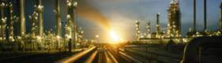

<div class='row-fluid'>
	<div class = 'span10'>
		<div class="well">
		API (American petroleum institute) - американский институт нефти, основной в США разработчик стандартов в области нефтегазовой промышленности, включает более 400 корпораций занимающихся добычей, переработкой и транспортировкой нефти<br>
			<center></center>
		</div>

		Стандарты API призывают к использованию безопасного, взаимозаменяемого оборудования и процессов на базе проверенных, передовых и значимых инженерных решений, а также к сокращению операционных затрат
		<hr>
		API 682 (ISO 21049) охватывает уплотнительные системы центробежных насосов. Он основан на базе знаний и опыте производителей и пользователей оборудования нефтегазовой отрасли
		<hr>
		Стандарт API регламентирует типы, компоновки механических уплотнений, и систем обеспечения, материалы, методики испытания, присоединительные размеры и планы обвязок насосов.
		<hr>
		Главная задача API 682 - промышленная безопасность, которая диктует конструктивные особенности уплотнений: точеный массивный фланец, монолитные пары трения, жесткие допуска на установку. Каждое уплотнение по API 682 подлежит испытаниям на среде и параметрах работы, идентичным реальному процессу. Поэтому приобретая уплотнения APIX по стандарту API 682, Вы всегда можете быть уверены в их высочайшем качестве и надежности работы оборудования
		<hr>
		<div class='well'>
			<table width="600" border="0" cellspacing="15">
        <tbody><tr>
          <td></td>
          <td height="50"><div align="left"><strong>APIX </strong><span class="style14"><strong><br>
              </strong><span class="style18 style33">Картриджные торцовые уплотнения по API 682  </span><span class="style33"><br>
            для нефтяных насосов по API </span></span></div></td>
          <td><div align="center"><a href="API.pdf" target="_blank"></a><br>
                  <span class="style19">подробнее..</span><br>
          </div></td>
        </tr>
      </tbody></table>
		</div>
		
	</div>
</div>